Step 1
Sign in with Discord
Open meatmanmods.com/afk and choose Sign in with Discord. Discord identifies you to Hamuel; the AFK page never receives your Discord password or private messages.
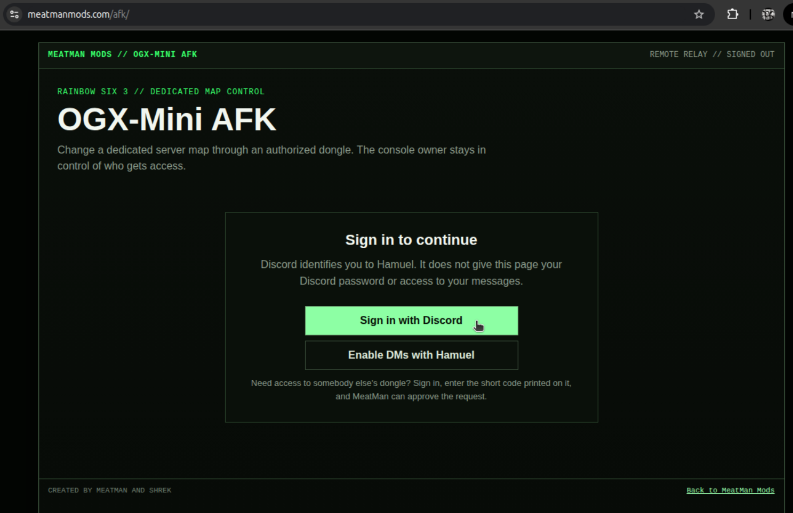
Rainbow Six 3: Black Arrow // AFK-005
This guide is for players using an already configured AFK dongle. You will sign in, request access, verify the Xbox cursor, and run safe map or launch commands.
Open meatmanmods.com/afk and choose Sign in with Discord. Discord identifies you to Hamuel; the AFK page never receives your Discord password or private messages.

Confirm you are signed into the correct Discord account, then press Authorize. The permission is limited to basic account identity; Hamuel cannot read your messages or send messages as you.
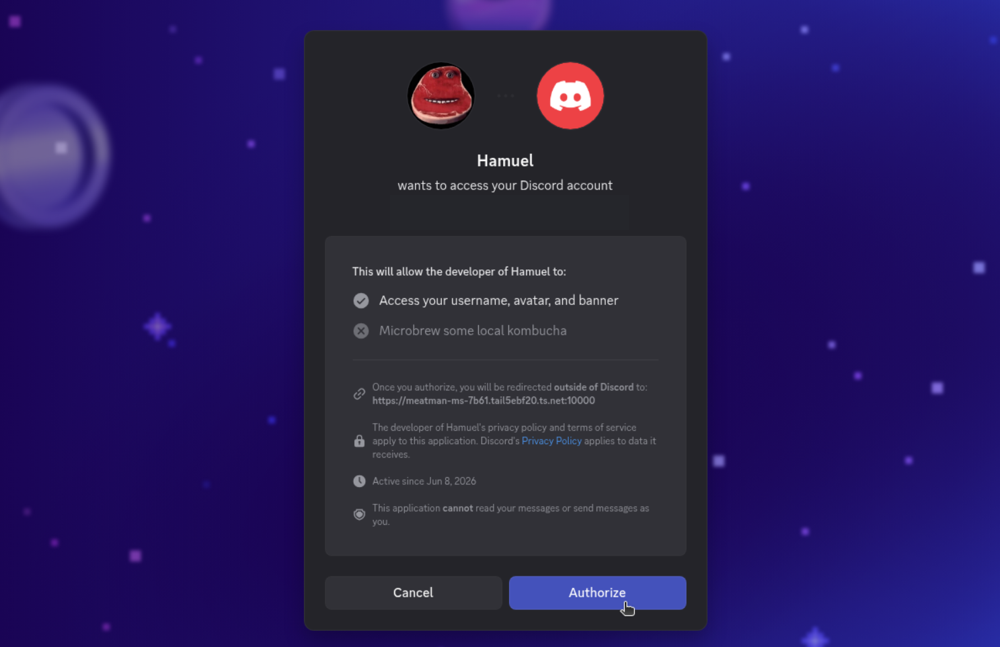
Under Request access, enter AFK-005 and press Request. Hamuel sends the dongle manager and owner an approval request. You cannot control the device until one of them approves you.
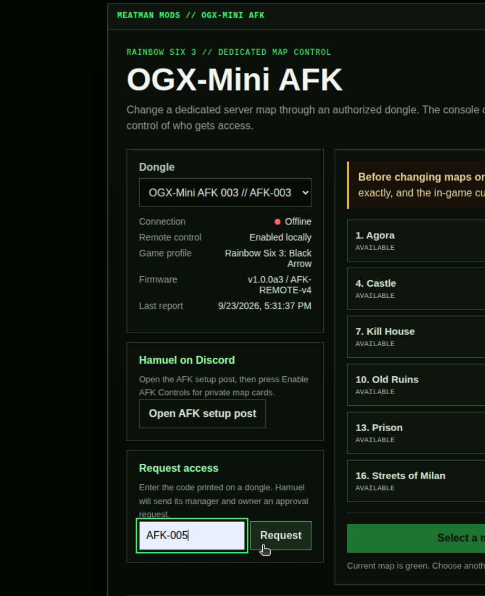
The green notice confirms the request was sent. After approval, reload if necessary and choose AFK-005 Setup Demo // AFK-005 from the Dongle list.
Seeing a device in the list means your Discord account has access. It does not guarantee that the Xbox or dongle is currently online.
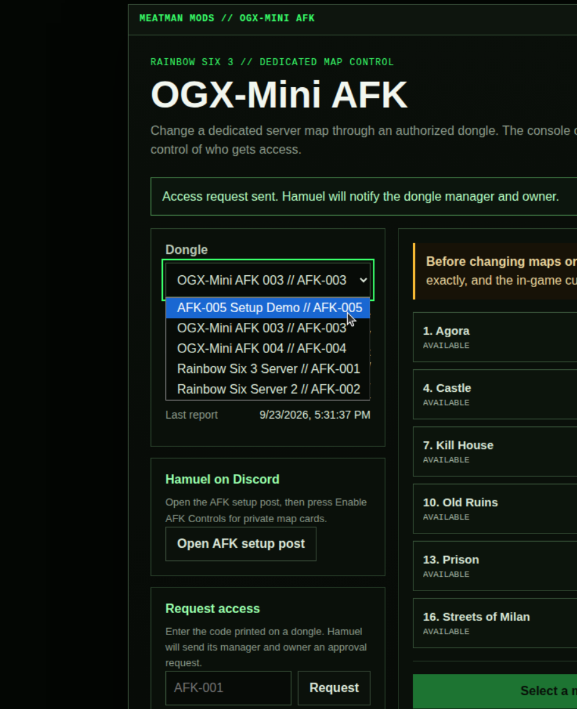
Check for the green Online indicator and Remote control: Enabled locally. The map list should refresh to the queue saved for AFK-005, with the recorded current map shown in green.
The green map is the system's saved record—not visual proof of what the Xbox is actually showing.
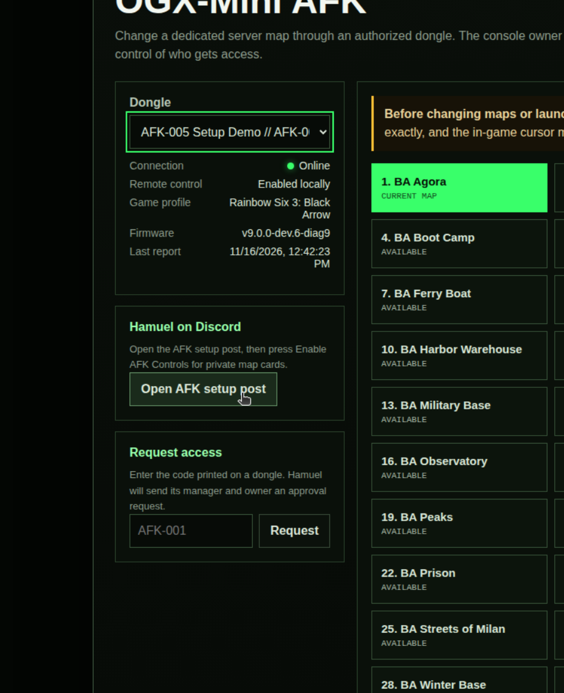
Use Optional AFK Video to confirm the current map and cursor position before running a macro. The normal map and launch path expects the cursor on Statistics.
If players launch by readying up in the lobby, the dedicated-server cursor moves to Options. Use the Options recovery action before a normal map command.
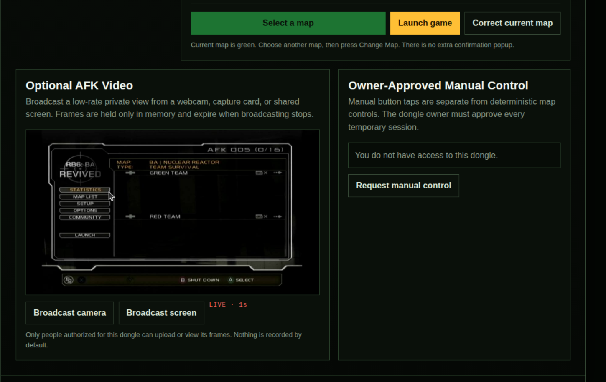
Select the destination map. It turns amber. Then press Change to… and wait for the completion notice. Do not send another command while the dongle is working.
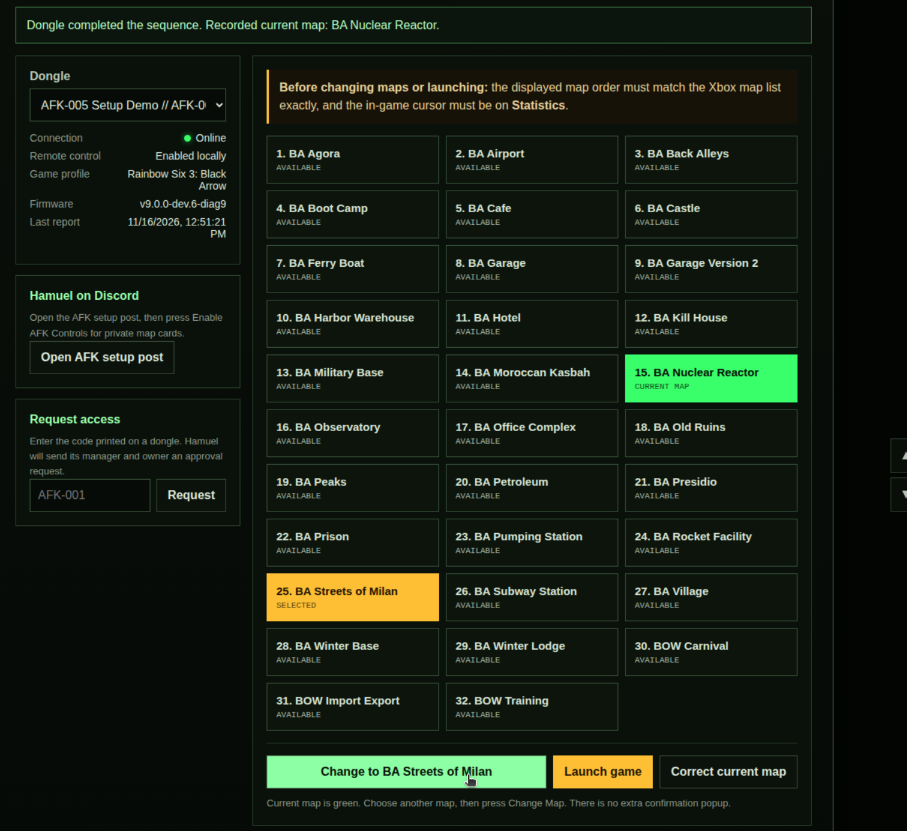
Compare the green website map with the actual map shown in the video feed. If they do not match, press Correct current map.
Correction mode changes only the dongle's saved position. It does not press any Xbox buttons.
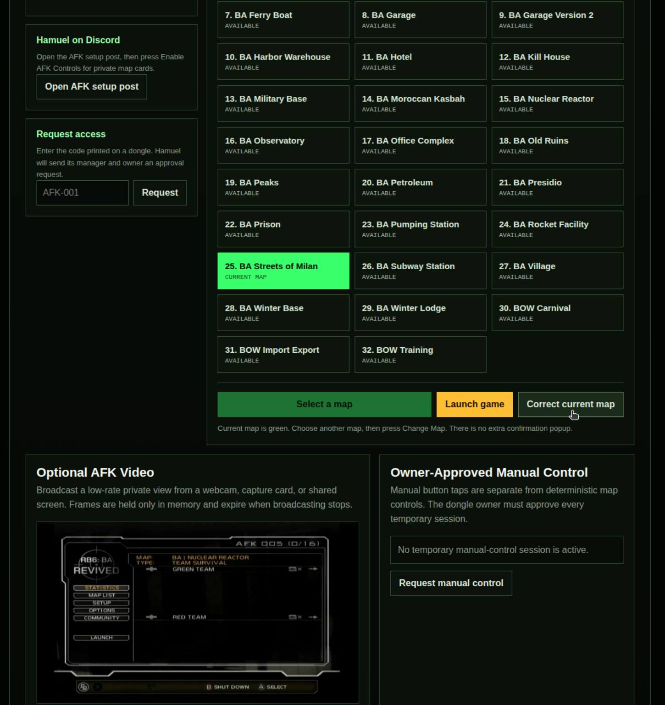
In correction mode, select the map actually shown in the video and press Set current map to…. The selection turns amber and is labeled Record as current.
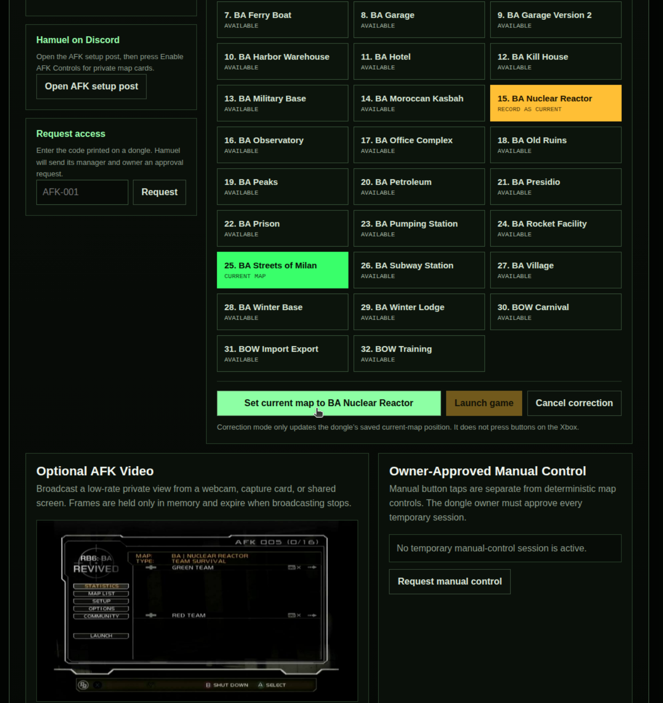
The actual map should now be green and labeled Current map. Verify the Xbox cursor again. If it is on Statistics, normal Change Map and Launch commands are safe to use.
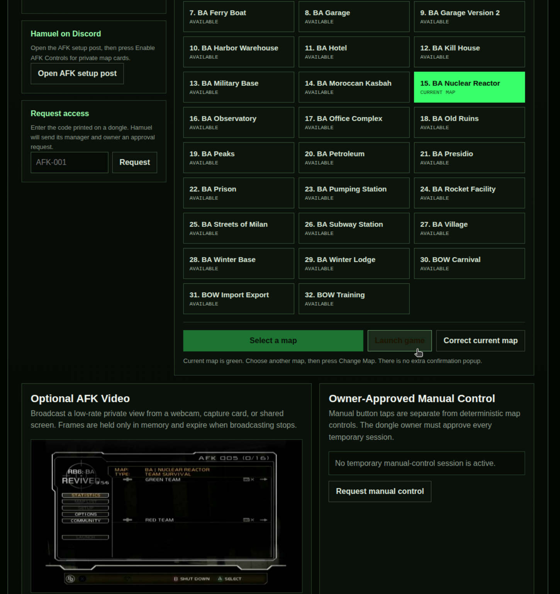
For Hamuel's private interactive controls, use Open AFK setup post on the website. In Discord, press Enable AFK Controls. Hamuel will open or refresh your private setup conversation.
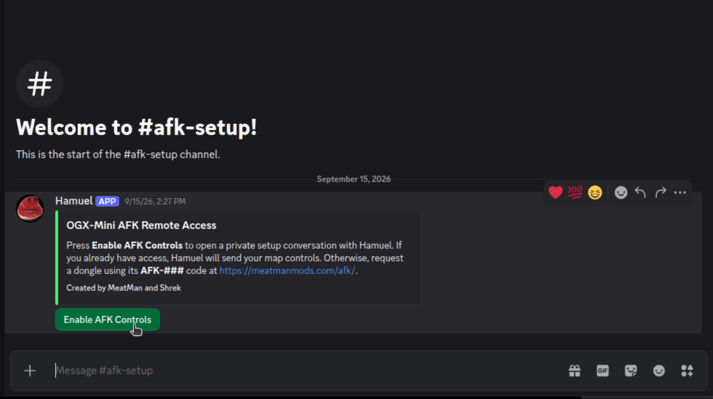
Open the Hamuel direct message, choose a dongle, then select AFK-005 Setup Demo. Online and offline state is shown in the list.
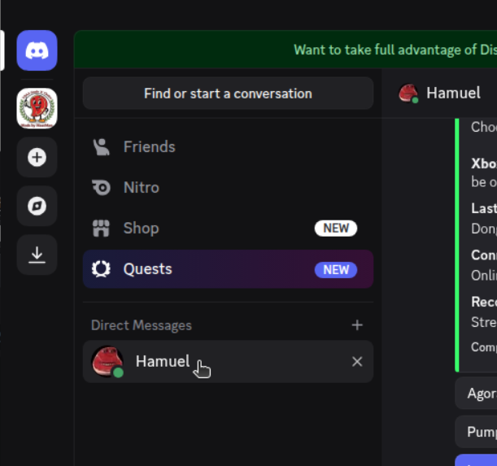
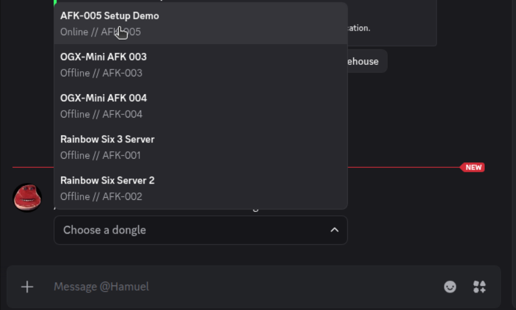
Hamuel's card reports the saved map and reminds you that completion means the dongle ran the sequence—not that the Xbox visually confirmed it.
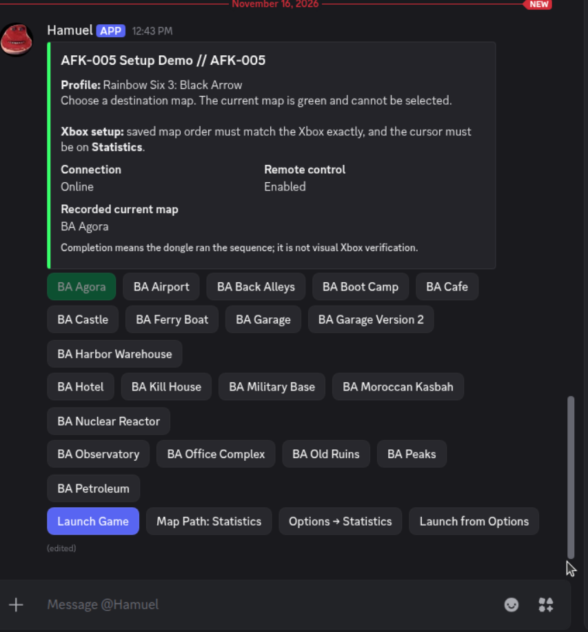